PROJECT 4 / PARTS A + B
From manual geometry to automatic matching
I start with manual correspondences in Part A, then find them automatically using Harris corners, ANMS, normalized patches, Lowe matching and four-point RANSAC in Part B. I use the same homography warping and feather blending for both, then compare a multiscale feature extension.
B.1 · Harris + ANMSB.2 · DescriptorsB.3 · MatchingB.4 · RANSAC + mosaicsB.5 · Multiscale
01 / OVERVIEW
Introduction
I used manually matched points to estimate how one photograph maps into another. I tested the same geometry on two rectifications, then warped and blended overlapping views into three planar mosaics and a cylindrical panorama.
I applied EXIF orientation before selecting points. I recorded each point as (x = column, y = row), with the center of the upper-left pixel at (0,0). The homography acts on column vectors and maps the source into the destination.
02 / PHOTOGRAPHS
A.1 · Shoot and digitize pictures
I captured overlapping views of an apartment hallway, the Gateway exterior, and the Gateway atrium. The overlap gave me features I could locate in both photographs. I selected pairs on the same physical details, such as molding corners, window-frame intersections, and balcony edges. A nearby point on a different edge would give the fit the wrong constraint. I recorded the coordinates on the orientation-corrected 5712×4284 images and used the two views shown for each final planar mosaic. I evaluated the extra captures separately.


03 / GEOMETRY
A.2 · Recover homographies
I wanted H to map each selected source point to its matching point in the reference image. For the fits here I fixed h33=1, leaving eight unknown coefficients. Each pair contributes one equation for u and one for v, so I need at least four pairs in a nondegenerate arrangement. The equations below show how I build the system from (x,y) and (u,v).
(1) Source-to-target homogeneous mapping
[u,v,1]ᵀ ∼ H [x,y,1]ᵀ H = [[h11,h12,h13], [h21,h22,h23], [h31,h32,1]] u=(h11*x+h12*y+h13)/(h31*x+h32*y+1) v=(h21*x+h22*y+h23)/(h31*x+h32*y+1)
(2) Explicit least-squares system
h = [h11,h12,h13,h21,h22,h23,h31,h32]ᵀ A[2i] = [x, y, 1, 0, 0, 0, -u*x, -u*y] A[2i+1] = [0, 0, 0, x, y, 1, -v*x, -v*y] b[2i]=u; b[2i+1]=v A ∈ ℝ^(2N×8); A h = b numpy.linalg.lstsq(A, b, rcond=None)
I solved the system in computeH with float64 least squares. With more than four pairs, the system is overdetermined, so I fit all the selected pairs together. I checked that the solution was finite and nonsingular and that the system had full rank. The fit minimizes algebraic error in the original coordinates without normalization.
04 / ACTUAL MANUAL DATA
Correspondences and recovered matrix

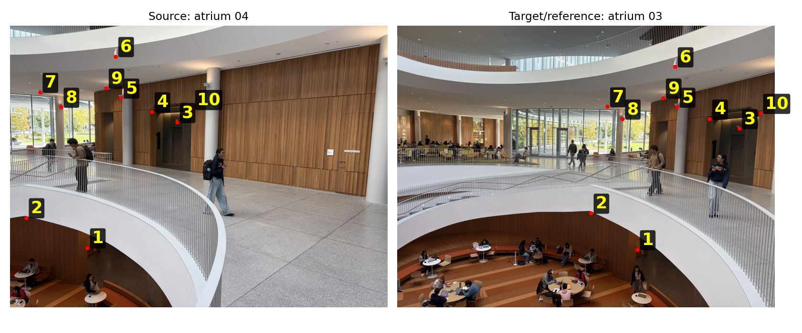
Open full-size imageI used ten pairs to map atrium 04 into atrium 03. They give a 20×8 system. The first pair contributes these two rows, rounded for display, and the corresponding right-hand side.
1169.3 3375 1 0 0 0 -4.2474e+06 -1.226e+07 0 0 0 1169.3 3375 1 -3.9801e+06 -1.1488e+07 b[0:2] = [3632.542580645164, 3403.9309677419355]
The resulting source-to-reference homography has H[2,2]=1.
0.366669495 -0.0630069561 2913.12293 -0.194094227 0.802854869 447.626515 -0.000106941797 -3.9579577e-06 1
I measured the forward error by projecting each source point and measuring its distance from the corresponding reference point. For this pair, the median was 5.43 px, the mean was 6.35 px, and the maximum was 12.59 px in original target-image coordinates. These errors describe the fitted points. The mosaic can still disagree at other depths.
| Source → target | N | Median / maximum px |
|---|---|---|
| Hallway left → center | 8 | 9.15 / 17.61 |
| Hallway right → center | 8 | 6.83 / 23.74 |
| Exterior left → center | 9 | 32.44 / 91.17 |
| Exterior right → center | 10 | 9.09 / 28.80 |
| Atrium 01 → 02 | 10 | 6.71 / 12.17 |
| Atrium 02 → 03 | 10 | 7.65 / 10.21 |
| Atrium 04 → 03 | 10 | 5.43 / 12.59 |
| Atrium 05 → 04 | 10 | 7.02 / 14.18 |
I used all 75 confirmed pairs in the fits listed above. The exterior left → center fit had the largest errors, so I kept it as a comparison and used center and right for the final exterior mosaic.
05 / SAMPLING
A.3 · Warp the images
I used inverse warping to find where each output pixel should sample the source image. I started at the destination pixel center, applied H⁻¹, and divided by the homogeneous coordinate. This fills the valid source footprint without the holes that can appear when source pixels are scattered forward.
(3) Inverse coordinates
[a,b,c]ᵀ = H⁻¹ [x_d,y_d,1]ᵀ s_x=a/c; s_y=b/c x_d=xmin+column; y_d=ymin+row
For nearest-neighbor sampling I round the source coordinates using floor(sx+0.5) and floor(sy+0.5). For bilinear interpolation I find the four surrounding pixels and weight them by the fractional parts of the source coordinates.
(4) Bilinear intensity
x0=floor(s_x); y0=floor(s_y) α=s_x-x0; β=s_y-y0 I=(1-α)(1-β)I[y0,x0] + α(1-β)I[y0,x1] + (1-α)β I[y1,x0] + αβ I[y1,x1]
I repeat edge neighbors and mark finite samples inside the source pixel-center bounds in a mask. I keep the canvas origin so negative coordinates map to the right array indices. The warp rejects singular transforms, horizon crossings, and oversized canvases.
06 / REAL RECTIFICATIONS
A.3 · Two rectification experiments
I mapped the confirmed TL, TR, BR, BL corners of the game case and Switch display to (0,0), (w−1,0), (w−1,h−1), (0,h−1). I used the same full-resolution oriented image, H, and target rectangle for both samplers. I then extracted that rectangle from each full warped canvas. Every pixel in the extracted rectangles is valid.
Game case · 497×801

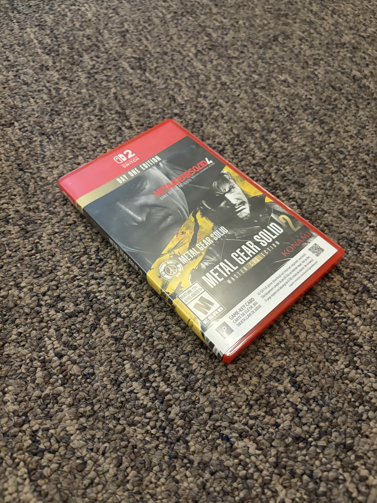
Open full-size image
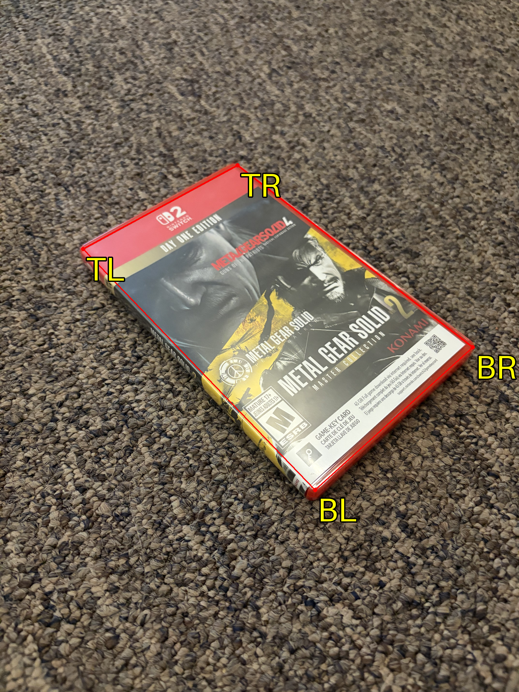
Open full-size imageOpen full-size imageOpen full-size image

Switch display · 961×541

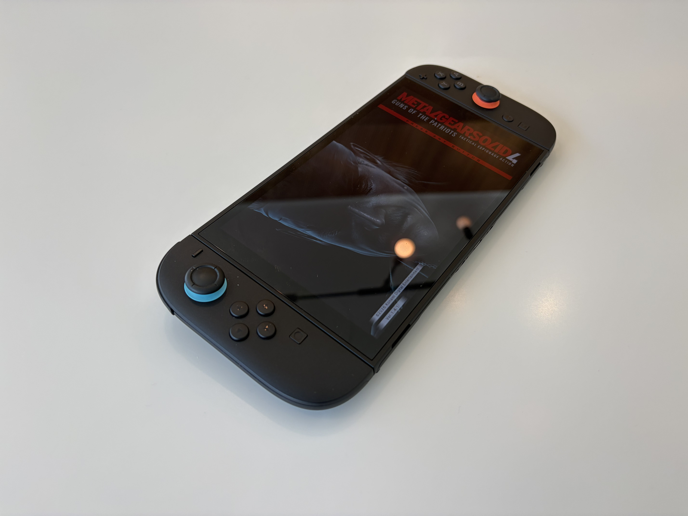
Open full-size image
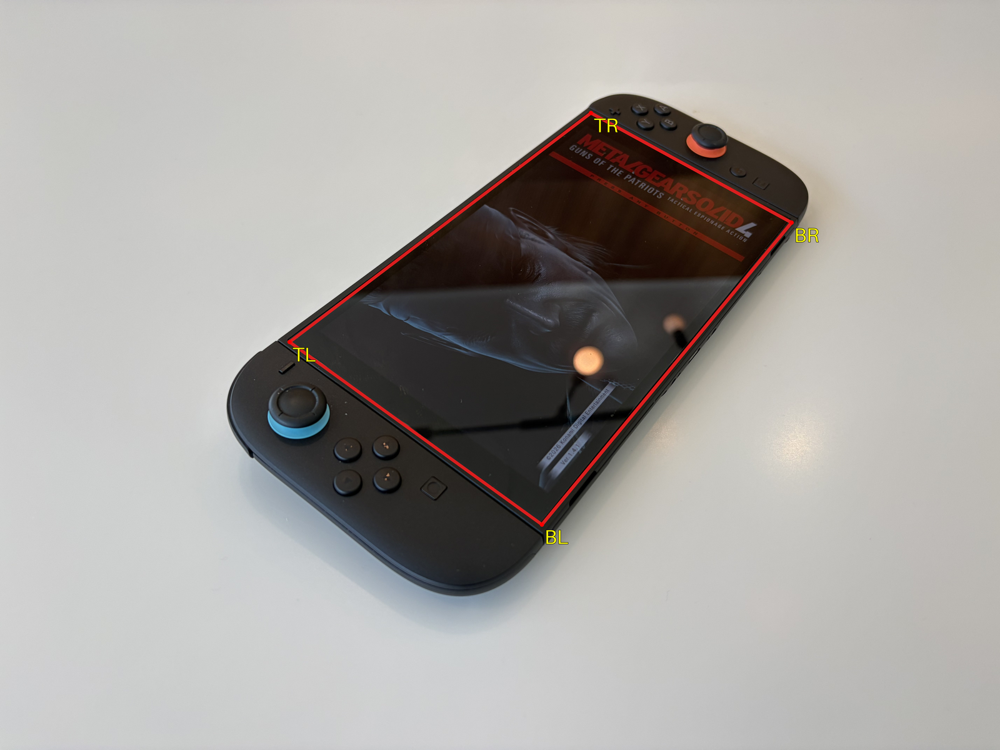
Open full-size image
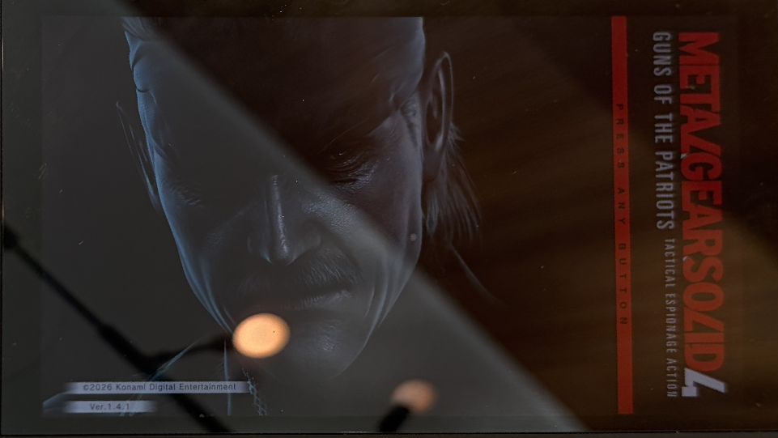
Open full-size imageOpen full-size image


| Photograph | Nearest | Bilinear |
|---|---|---|
| Game case | 0.1425 (0.1414–0.1450) | 0.3161 (0.3122–0.3168) |
| Switch display | 0.1776 (0.1769–0.1800) | 0.4035 (0.3973–0.4100) |
I timed only the warp, including validation and full-canvas allocation. Loading, H estimation, rectangle extraction, saving, plotting, and clicking were outside the timing. On arm64 macOS with Python 3.9.6 and NumPy 2.0.2, bilinear took about 2.2× as long as nearest neighbor. In the detail crops, bilinear softened fine text and texture slightly, while nearest neighbor kept a more granular appearance. The maximum four-corner errors were 4.26×10⁻⁸ px and 3.52×10⁻⁸ px. Both are small because the same four pairs define the fit.
07 / PLANAR COMPOSITION
A.4 · Blend images into mosaics
I kept the central view fixed with identity H and used the selected pairs to estimate the other image’s transform into that reference. I warped both views with bilinear sampling, then placed them on a common canvas using their origins. I used the validity masks to find the overlap. A dark pixel can still be valid.
(5) Distance feathering
d_i(p)=distance to nearest invalid mask sample w_i(p)=d_i(p)/Σ_j d_j(p), if Σ_j d_j(p)>0 I_out(p)=Σ_i w_i(p) I_i(p) M_union(p)=[Σ_j d_j(p)>0]
I used the SciPy Euclidean distance transform to measure the distance from each valid pixel to the nearest invalid pixel, including the padding ring. Dividing each distance by their sum makes the weights add to one wherever either image is valid. Each view contributes both overlapping and exclusive pixels. I cropped the displayed frames in reference coordinates after blending the full footprints.
Hallway · left + center

In the hallway, the molding and exit doorway line up broadly. The foreground door grows wider under the planar warp, and I can still see some softness and parallax. The displayed two-view frame keeps new content from both photographs.
Gateway exterior · center + right

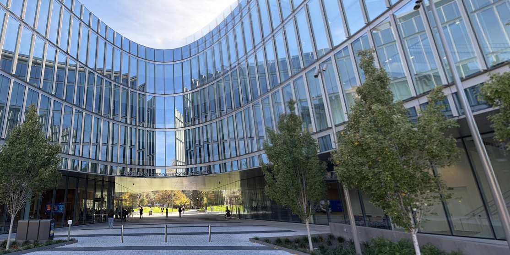
Open full-size imageThe exterior’s building lines line up broadly, but the trees and far-right façade look softer and stretched. I left out the left-to-center pair after seeing its larger fit errors.
Gateway atrium · 03 + 04

In the atrium, I could still follow the elevator, columns, and balcony, but the railings show local misalignment and people appear as translucent ghosts. Feathering softens the transition between views. The five-frame planar attempt crossed the projective horizon, so I used the two-view result.
08 / CS 280A EXTENSION
A.5 · Cylindrical projection
I tried a cylinder on the same atrium 03+04 pair because the planar warp stretched the periphery. I projected each working photograph onto the cylinder directly. The equations show the centered forward map and the inverse I used for sampling.
(6) Forward cylindrical map
c_x=(width−1)/2; c_y=(height−1)/2 u=f atan((x−c_x)/f) v=(y−c_y) f/√((x−c_x)²+f²)
(7) Inverse cylindrical sampling
θ=u/f; |θ|<π/2 x=c_x+f tan(θ) y=v/cos(θ) + c_y
I scaled f with the source images, then used the inverse map and the same bilinear sampler to fill the cylindrical grid. I marked invalid samples in a mask. To align the projected views, I shifted their origins by integer offsets and feathered the overlap without sampling the projected images again.
(8) Manual translation registration
Δ_source→target = median_i(C(p_target,i)−C(p_source,i)) O_03=(0,0); O_04=Δ_04→03 I_cyl=feather_blend(shift(C(I_i), O_i))
I calculated the horizontal and vertical median shifts from all ten confirmed 04→03 pairs. Rounding the working offsets changes each axis by at most 0.5 px. The median, mean, and maximum residuals are 25.86/46.21/132.90 original-resolution cylindrical pixels. I aligned the cylindrical views with a shift. That only approximates their alignment because the camera motion was not a calibrated rotation about the vertical axis.


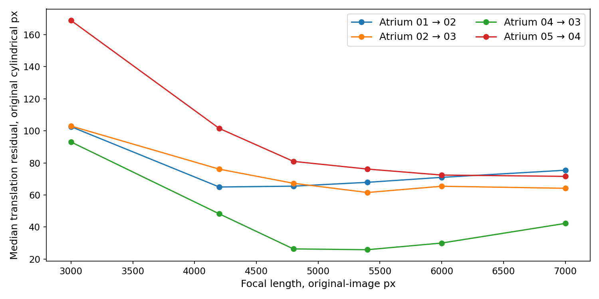
Open full-size imageThe EXIF focal length is 5.96 mm, with a 26 mm full-frame equivalent. I used those as starting clues because I did not have a sensor, crop, or stabilization calibration. I chose f=5400 px from the registration and visual comparisons. In this model it gives a single-image horizontal field of view of 55.74°.

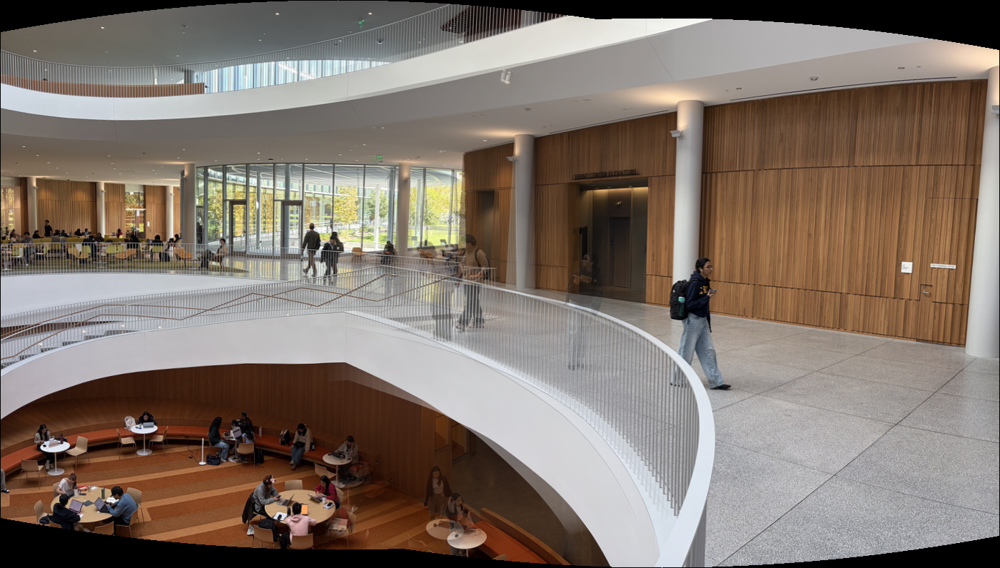
Open full-size image
The cylinder reduced the peripheral stretching I saw in the planar comparison. Horizontal lines can curve, while the vertical structure is generally better preserved here. I still saw misaligned railings and ghosts from moving people. The five-frame and central-three cylinders showed stronger doubled stairs and railings and more drift, so I kept the two-view result.
09 / LIMITATIONS
Limitations
The correspondence errors helped me compare fits, but unnormalized least squares is sensitive to coordinate scale and incorrect matches. I also found that a single planar homography cannot align different depths when the camera translates. A wide warp can cross the projective horizon, and feathering cannot fix parallax, subject motion, or exposure changes. The cylindrical alignment assumes approximately compatible viewing directions and a centered principal point. Its empirical focal length is specific to this experiment.
10 / CONCLUSIONS
What I learned in Part A
I learned that matching the same physical points matters even when a homography fits the selected pairs well. The railings and foreground objects made it clear where one transform could not align the whole scene.
Inverse warping let me sample both rectifications on the same output grid. Bilinear sampling made fine detail slightly smoother and took about 2.2× the nearest-neighbor warp time in these experiments.
Keeping both views on one canvas made it easier to see what feathering could smooth. The cylindrical comparison showed less peripheral stretching, while the railings and moving people still exposed limits of the alignment.
Assignment references: Fall 2026 Part A and project overview.
B.1 · Find well-spaced corners
Detect candidate corners
Following the Berkeley Harris starter, I used corner_harris(method="eps") to find patches whose intensity changes in two directions. The local second-moment matrix summarizes products of horizontal and vertical intensity gradients; two large eigenvalues indicate a corner rather than a flat patch or a single edge. Before detection, I applied EXIF orientation and converted RGB to Rec.709 luminance. I used sigma 1 for the response, then selected peaks with relative threshold 0.01, minimum separation 1 and a strict 20-pixel border exclusion. Throughout the pipeline, I store coordinates as (x=column, y=row).
Spread the points with ANMS
The raw detector puts many corners close together, especially around repeated architectural details. I used adaptive non-maximal suppression (ANMS), following Brown, Szeliski and Winder’s Multi-Image Matching using Multi-Scale Oriented Patches (CVPR 2005), to select a more distributed set. For each corner i, I computed the distance to the nearest corner j satisfying the robust condition below. This is its suppression radius; I assigned an infinite radius when no corner qualified. I kept the 500 largest radii, breaking ties by strength, then y and x.
(B1) Robust suppression, c=0.9
r_i = min_j ||p_i − p_j||, where f_i < 0.9 f_j and j ≠ i
I compared the raw detections with the ANMS selections in Figures 15–16. In the hallway, I reduced 712 candidates to 500; in the exterior example, I reduced 5097 to 500. I noticed fewer dense clusters after ANMS, while features still covered the visible architecture.
| Photograph | Harris | ANMS |
|---|---|---|
| Hallway left | 712 | 500 |
| Hallway center | 1195 | 500 |
| Exterior center | 3920 | 500 |
| Exterior right | 5097 | 500 |
| Atrium 03 | 5698 | 500 |
| Atrium 04 | 5786 | 500 |

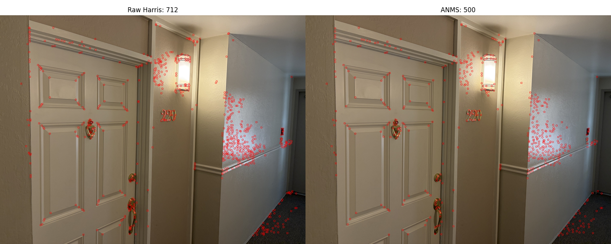
Open full-size image
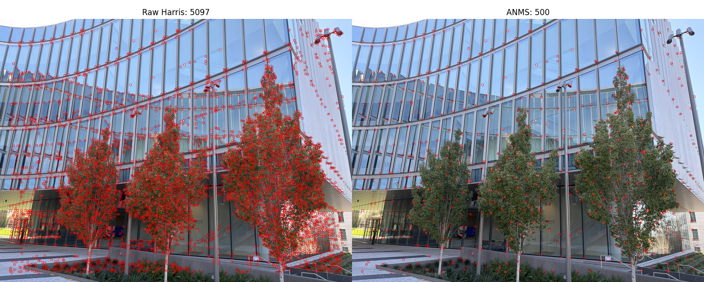
Open full-size imageB.2 · Describe each corner
To compare corners across photographs, I constructed a descriptor from the image patch around each selected point. I first blurred the image with a Gaussian of sigma 2 (reflect boundaries, truncate 4), then bilinearly sampled an 8×8 grid within a 40×40 native-pixel neighborhood. The sample offsets are −17.5, −12.5, …, 17.5 in each axis: five pixels apart.
I flattened each patch row-major into 64 float64 values, subtracted its mean and divided by its population standard deviation. This lets me compare local patterns with less sensitivity to overall brightness and contrast.

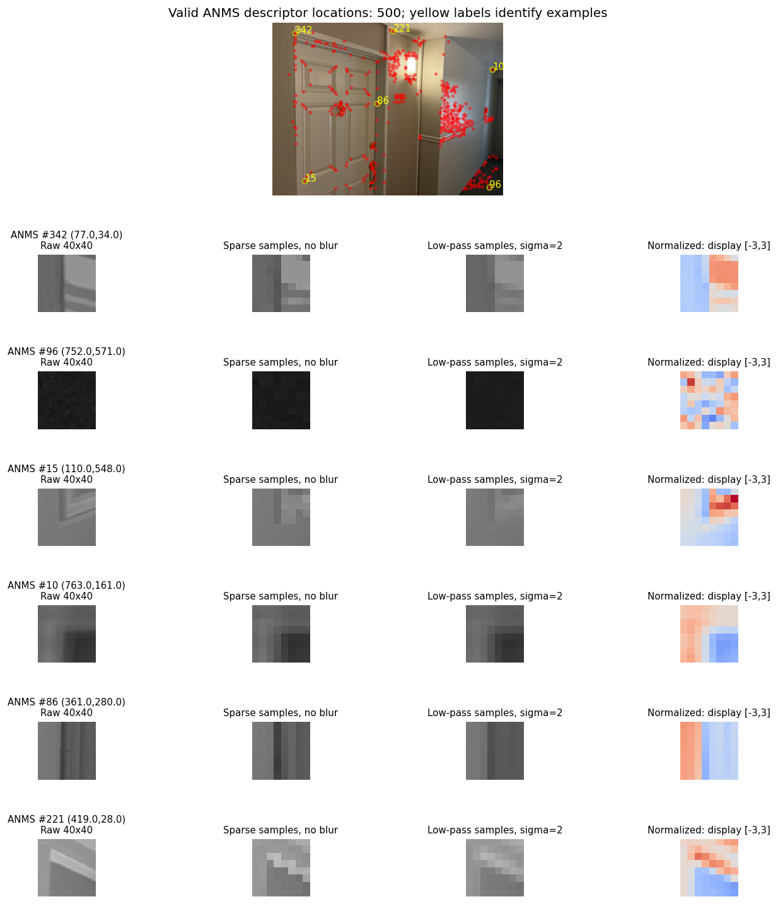
Open full-size image(B2) Patch normalization
D = (P − mean(P)) / std(P), ddof=0
I rejected patches with out-of-bounds support or standard deviation ≤10⁻⁸. All six images yielded 500 valid descriptors each. In Figures 17–18, I compared six examples per image through the raw-support, sampling, blur and normalization stages. The normalized panels show the local variation that enters matching rather than the original patch brightness. I used axis-aligned MOPS-style patches, without rotation normalization or the paper's wavelet extension.

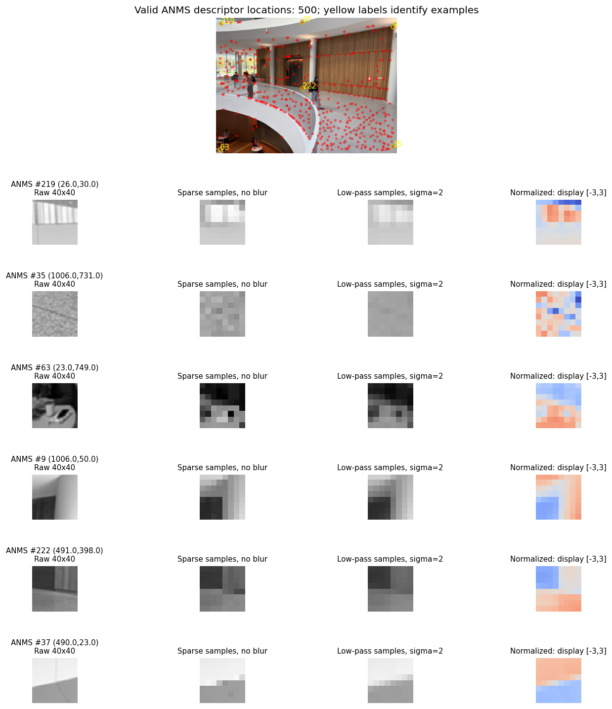
Open full-size imageB.3 · Match the descriptors
I computed Euclidean distances from each source descriptor to the destination descriptors and found its two nearest neighbors. I compared the closest distance with the second-closest to check whether the best match was distinct from its alternatives. I accepted it only when Lowe's ratio d₁/d₂ < 0.80. A zero second-neighbor distance is ambiguous, so I rejected it. Matching is directional: several source features can select the same destination, and I did not apply mutual or unique-target filtering.
I obtained 129 hallway, 47 exterior and 82 atrium candidates before RANSAC. I also swept the ratio threshold from 0.60 to 0.90, which gave 55–212, 12–119 and 48–144 matches, respectively. I inspected the 40 lowest-ratio candidates for each scene in Figures 19–21. Looser thresholds gave me more candidates, but repeated windows and railings still produced incorrect matches.

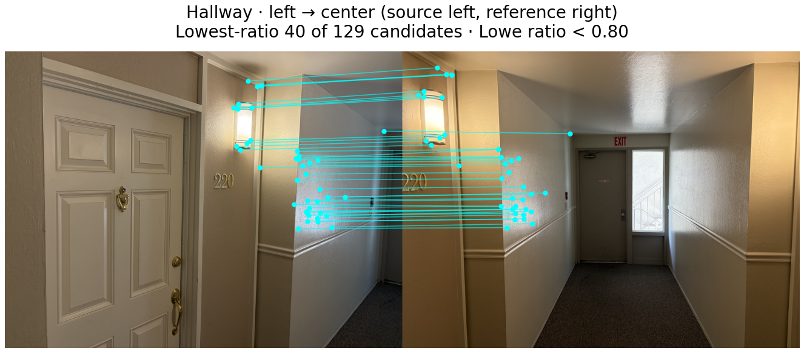
Open full-size image
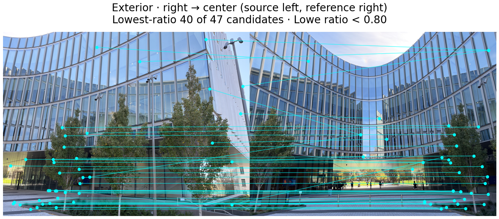
Open full-size image
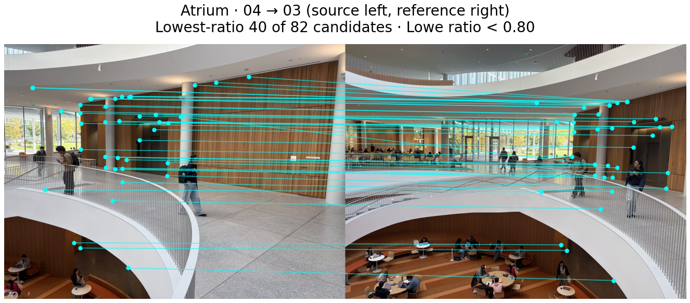
Open full-size imageB.4 · Estimate H with RANSAC
The ratio test did not remove every incorrect match, so I used four-point RANSAC to estimate a homography from a consistent subset:
- I sampled four candidate pairs and solved for source-to-reference H with my existing eight-unknown linear estimator, rejecting degenerate samples.
- I projected every source candidate and compared it with its destination. I counted it as an inlier only when the forward reprojection error was strictly below 4 working-image pixels.
- I kept the largest consensus, refit H with its inliers and reclassified the matches.
I used seed 2804 and 5000 trials for every scene. Only automatic matches entered the fit; I did not use the Part A manual correspondences to estimate these homographies.
(B3) Forward reprojection error
q̂_i = dehomogenize(H [x_i, y_i, 1]ᵀ) e_i = ||q̂_i − q_i||₂; inlier ⇔ e_i < 4 working pixels
Scroll horizontally for all measurements.
| Scene | Source → reference | Matches | Inliers | Median px | Mean px | Max px |
|---|---|---|---|---|---|---|
| Hallway | left → center | 129 | 87 | 0.888662 | 1.073190 | 3.997519 |
| Exterior | right → center | 47 | 30 | 1.029501 | 1.168333 | 3.138645 |
| Atrium | 04 → 03 | 82 | 52 | 1.447448 | 1.596076 | 3.949551 |

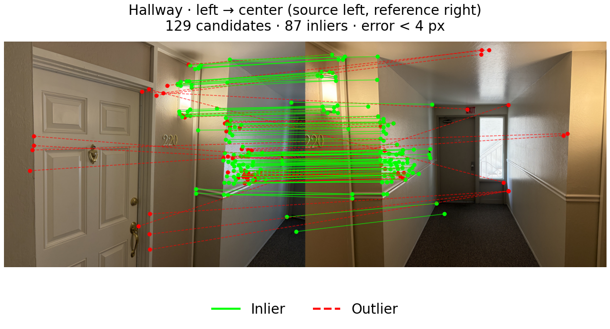
Open full-size image
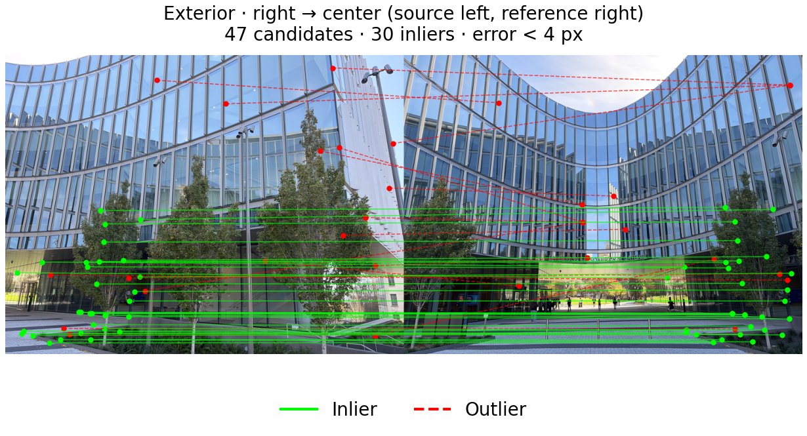
Open full-size image
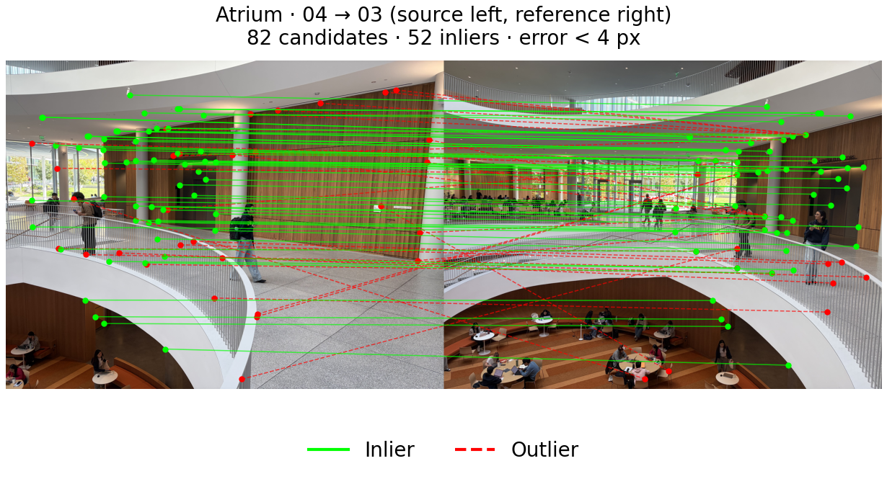
Open full-size imageCompare the automatic and manual mosaics
I stitched each pair using the estimated H and the same inverse bilinear warping, validity masks and distance feathering as Part A. I kept identity H for the reference image. To compare the automatic and manual panoramas fairly, I displayed each pair in the same reference-space viewport at the same magnification. I retained the full warped footprints separately.
Hallway. I found that the automatic panorama kept the wall and trim broadly aligned, much like my manual result. The foreground door still expands under the planar projection. This showed me that automatic correspondences still leave foreground parallax that one planar homography cannot model.
Exterior. I noticed plausible alignment in the lower overlap in both panoramas, but the upper façade remained weakly constrained and the far-right region stretched. This made me cautious about using the fitted inlier error to judge areas beyond the matched overlap.
Atrium. I found the main architecture broadly readable in both results. The doubled railings showed me that one transform still could not align the different depths. Moving-person ghosts also remained because stitching and feathering cannot place a moving subject consistently across the two photographs.

Automatic matches + RANSAC

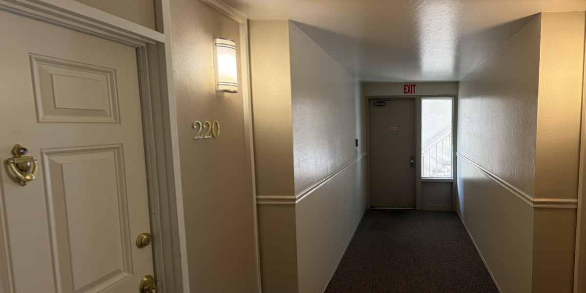


Automatic matches + RANSAC

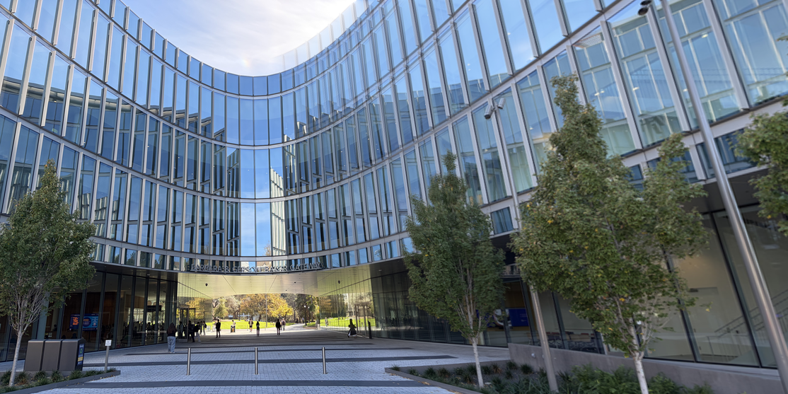


Automatic matches + RANSAC

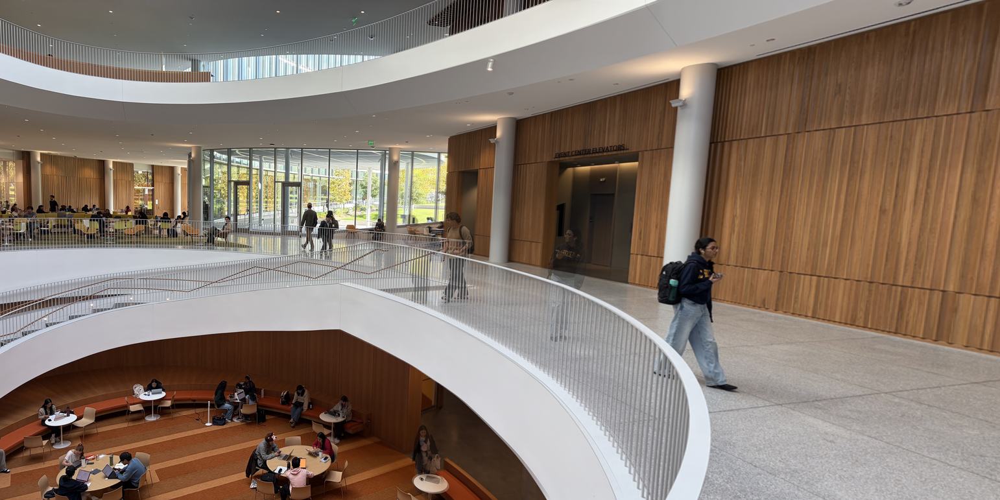

B.5 · Try features at multiple scales
Build the pyramid
I tried nominal scales 1.00, 0.75 and 0.50 to see whether features with different image support would improve matching. I built each Gaussian pyramid level directly from the base working luminance image. For each actual axis ratio s, I prefiltered with sigma 0.5√(s⁻²−1), using reflect boundaries and truncate 4, then bilinearly sampled at half-pixel resize centers. I kept level zero as an exact copy and ran Harris, ANMS and descriptor extraction independently on each level.
| Scene | 1.00 | 0.75 | 0.50 |
|---|---|---|---|
| Hallway | 800×600 | 600×450 | 400×300 |
| Exterior | 743×557 | 557×418 | 372×278 |
| Atrium | 1028×771 | 771×578 | 514×386 |


Level 2 · scale 0.50 · 400×300

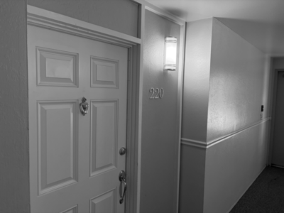


Level 2 · scale 0.50 · 372×278

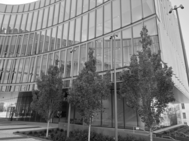

Level 0 · scale 1.00 · 1028×771

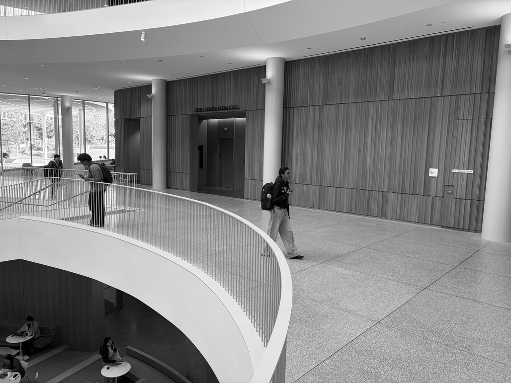


Bring the features into one coordinate frame
I allocated 200/175/125 features across the levels, for a nominal total of 500 per photograph, without redistributing unused quota. Each descriptor still covers 40×40 native pixels, so coarser levels describe larger regions of the original scene. I stored the native coordinates and level IDs, then converted coordinates once into the base image:
(B4) Half-pixel level-to-base mapping
s_x = W_level / W_base; s_y = H_level / H_base x_base = (x_level + 0.5) / s_x − 0.5 y_base = (y_level + 0.5) / s_y − 0.5
I used the actual rounded dimensions to calculate s_x and s_y. I allowed cross-level matches while keeping the same Euclidean ratio <0.80, seed 2804, 5000 trials and 4-base-pixel RANSAC threshold.
To remove cross-scale duplicates, I kept finer features first and suppressed coarser features within 3 base pixels, preserving ANMS order within each level. I did not compare Harris responses across scales. This left fewer than 500 descriptors per image. Hallway center had only 112 coarse candidates, leaving 13 unused slots before suppression.
| Photograph | Harris | Selected / valid | Retained descriptors |
|---|---|---|---|
| Hallway left | 712 / 392 / 213 | 200 / 175 / 125 | 200 / 57 / 41 |
| Hallway center | 1195 / 298 / 112 | 200 / 175 / 112 | 200 / 102 / 45 |
| Exterior right | 5097 / 2736 / 1124 | 200 / 175 / 125 | 200 / 76 / 47 |
| Exterior center | 3920 / 2396 / 1201 | 200 / 175 / 125 | 200 / 80 / 50 |
| Atrium 04 | 5786 / 2112 / 657 | 200 / 175 / 125 | 200 / 72 / 54 |
| Atrium 03 | 5698 / 3268 / 1306 | 200 / 175 / 125 | 200 / 77 / 52 |

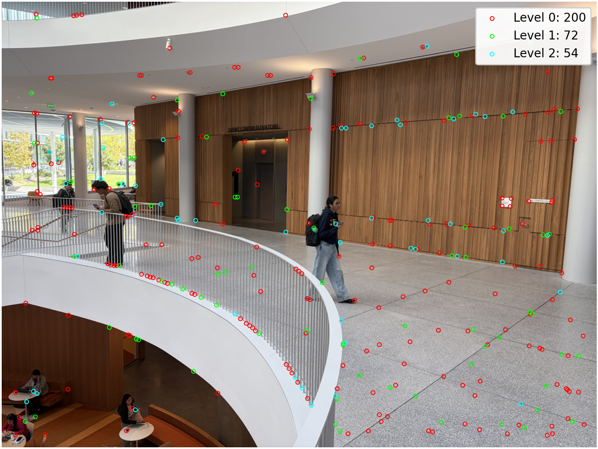


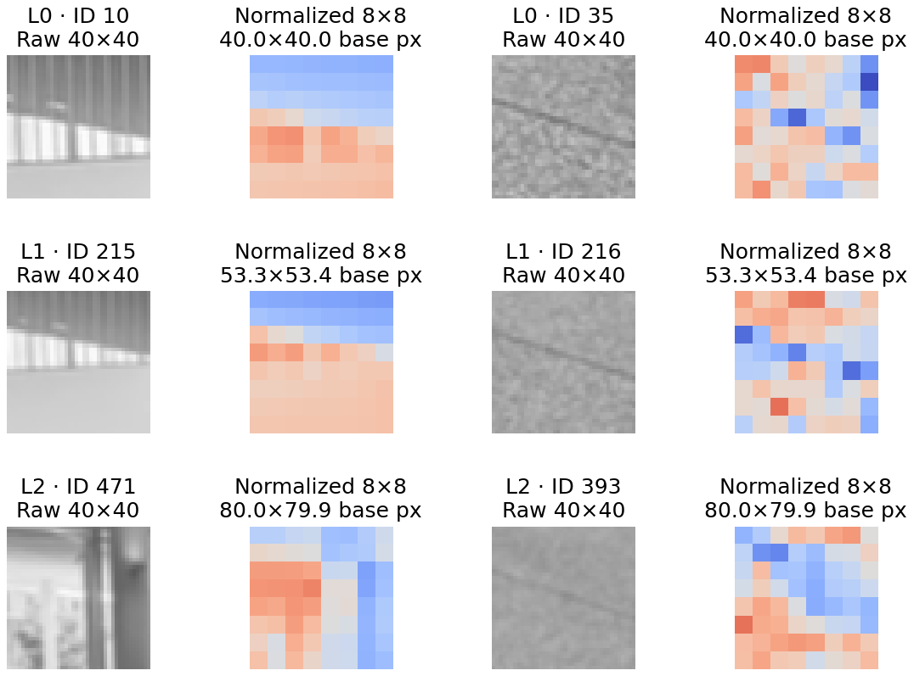
Open full-size image
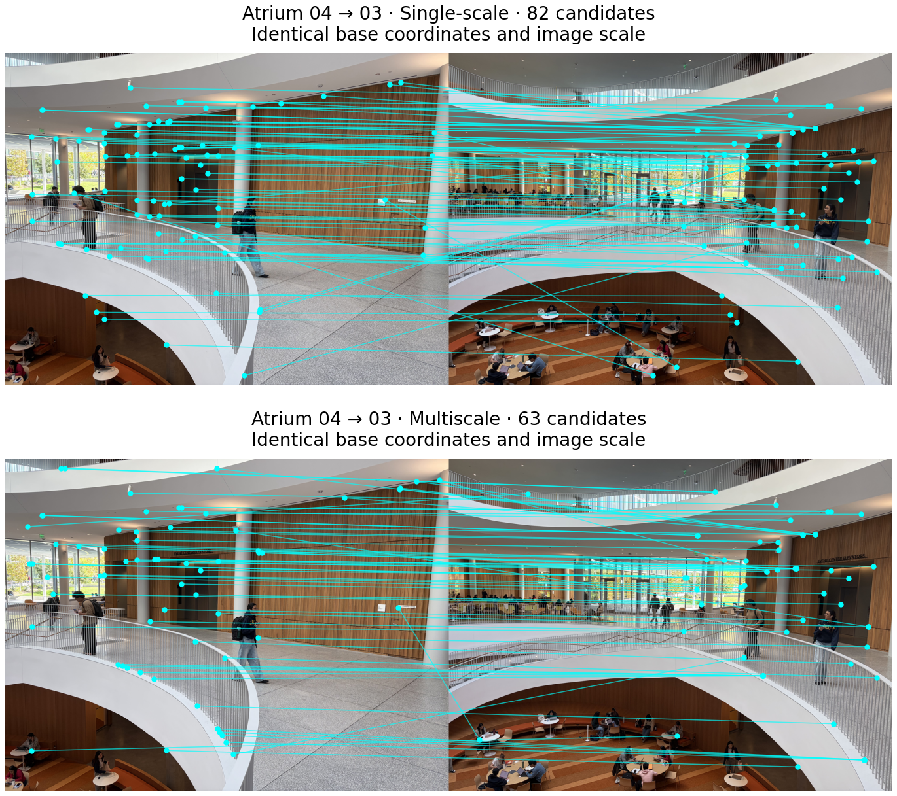
Open full-size imageCompare the results
| Scene | Configuration | Matches | Inliers | Median px |
|---|---|---|---|---|
| Hallway | Single-scale | 129 | 87 | 0.888662 |
| Hallway | Multiscale, 3 px dedup | 71 | 44 | 0.986186 |
| Hallway | Diagnostic, no dedup | 97 | 68 | 0.889464 |
| Exterior | Single-scale | 47 | 30 | 1.029501 |
| Exterior | Multiscale, 3 px dedup | 20 | 11 | 0.731748 |
| Exterior | Diagnostic, no dedup | 23 | 13 | 0.736534 |
| Atrium | Single-scale | 82 | 52 | 1.447448 |
| Atrium | Multiscale, 3 px dedup | 63 | 37 | 1.920991 |
| Atrium | Diagnostic, no dedup | 83 | 58 | 1.033507 |
I compared match counts, inlier counts, reprojection errors and the final panoramas with the single-scale baseline. I obtained 18/71 cross-level matches in the hallway, 4/20 in the exterior and 30/63 in the atrium; fine-to-fine remained the largest level pair. I found fewer inliers with the primary multiscale configuration in all three scenes. Although the exterior median fell to 0.732 px, it came from only 11 inliers and did not establish better upper-façade alignment.
I also tried a no-deduplication diagnostic with the same nominal budget and obtained 68, 13 and 58 inliers. The atrium's higher count may include correlated cross-scale repeats, so I did not treat it as evidence of a better panorama.


I measured feature extraction at about 1.5–2.6× the single-scale time in one run per configuration. I included the pyramid, detection, selection, description and deduplication, but excluded plotting and export. Since I also changed the budgets and suppression, this comparison does not isolate scale alone.
What I learned
I found that bilinear sampling gave slightly smoother detail at about 2.2× the nearest-neighbor warp time in my rectification experiments. The panoramas taught me a different limitation: finding consistent matches does not remove foreground parallax, stretching outside a well-constrained overlap, or ghosts from moving people. I learned to judge the multiscale results using the images and match counts together, rather than assuming that more scales would help.